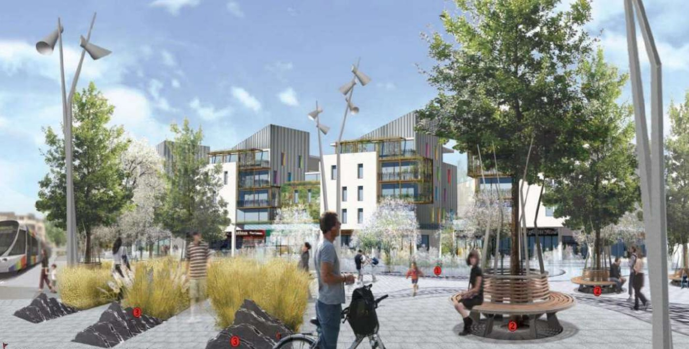
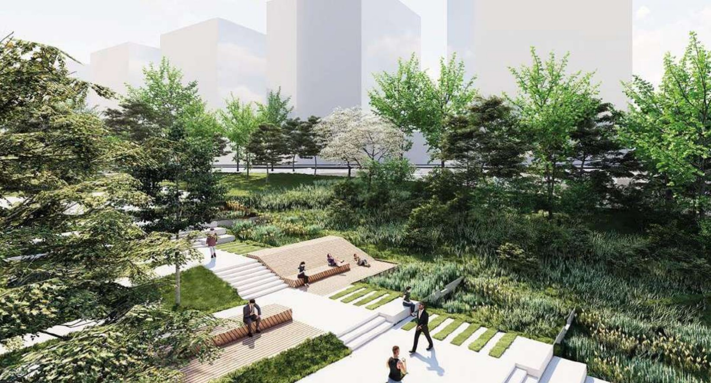
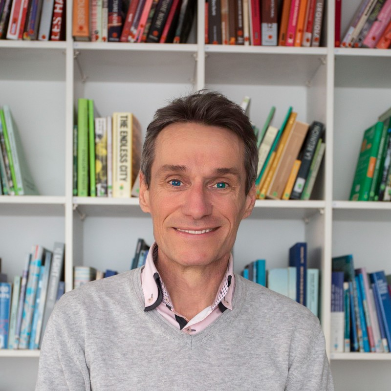

Je conçois des espaces extérieurs qui marient esthétique, fonctionnalité et respect de l'environnement.
Mon parcours m’a permis de piloter des opérations allant de l’aménagement de d’infrastructure de transport (BHNS, tramways, pistes cyclables), quartiers urbains (Massena Paris Seine rive gauche, Fieschi Vernon, Plateau Mayenne) des centres-bourgs (Pordic, Ploufragan, Pornic) à des études territoriales (Marais d’Orx), jusqu’à des Master Plans internationaux, en assumant à la fois la conception, la gestion d’équipe, le suivi de chantier, et la relation avec les maîtrises d’ouvrage. Cette vision globale me permet d’aborder chaque mission avec rigueur, créativité et une forte culture du partenariat.
Habitué à encadrer des équipes projet, je veille à maintenir un haut niveau de qualité tout en favorisant l’intelligence collective. Je maîtrise les outils de conception graphique et suis particulièrement sensible à la transition écologique, que je cherche à intégrer à toutes les échelles du projet.
Convaincu que la qualité des espaces publics naît de la concertation, de la transversalité des compétences et de l’ancrage dans les territoires, je serais heureux de mettre mon expertise au service de votre agence et de ses projets exigeants et engagés


Paysagiste concepteur diplômé de l'École Gembloux Agro-Bio Tech - Université de Liège j'ai aussi suivi une formation BIM et modélisation sur Revit & Navisworks de Arsenio et été formé au management de projets chez ib Cegos.
Je suis capable de gérer des gros projets et j'ai déjà été amené à assumer à la fois la conception, la gestion d’équipe, le suivi de chantier, et la relation avec les maîtrises d’ouvrage de mes projets.
A remplir...

Vous avez un projet ou souhaitez en discuter ? N'hésitez pas à me contacter.